L’application Auto-contrôle permet de contrôler que des envois d’une norme d’echange sont conformes relativement à la version en cours de celle-ci. Pour illustrer les fonctionnalitées d’Auto-contrôle, nous prendrons des exemples de la norme DSN qui utilise toutes les fonctionnalités de cette application.
Pour pouvoir lancer l’application en mode graphique il est nécessaire que la machine virtuelle Java utilisée par le système par défaut corresponde à l’architecture du package d’Autocontrole utilisée. Dans le cas contraire, un message d’erreur s’affichera au lancement indiquant qu’il manque une librairie.
Si vous avez installé plusieurs machines virtuelles Java avec différentes architectures, vous pouvez sélectionner celle à utiliser par défaut de la manière suivante :
Pour Windows 7 :
Pour Linux :
L’application Auto-contrôle possède une fenêtre principale contenant l’ensemble des contrôles permettant d’accéder aux fonctionnalités ainsi qu'à un ensemble de vues.
Voici la fenêtre principale :
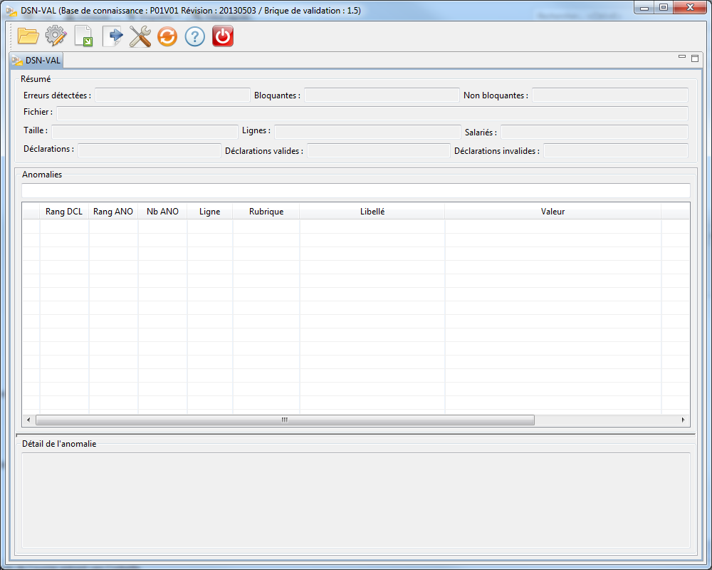
A partir de celle-ci, différentes vues sont accessibles :
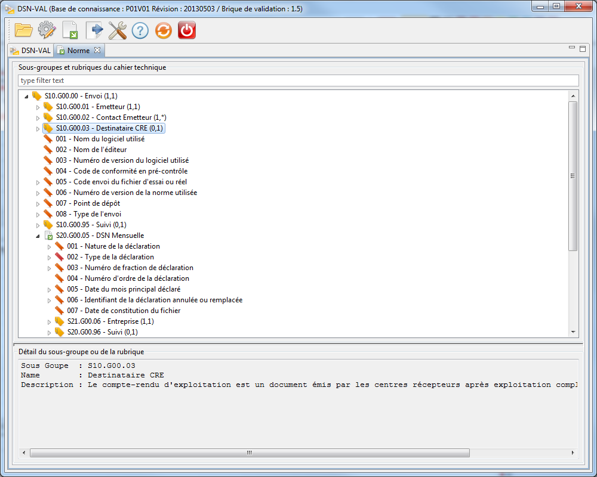
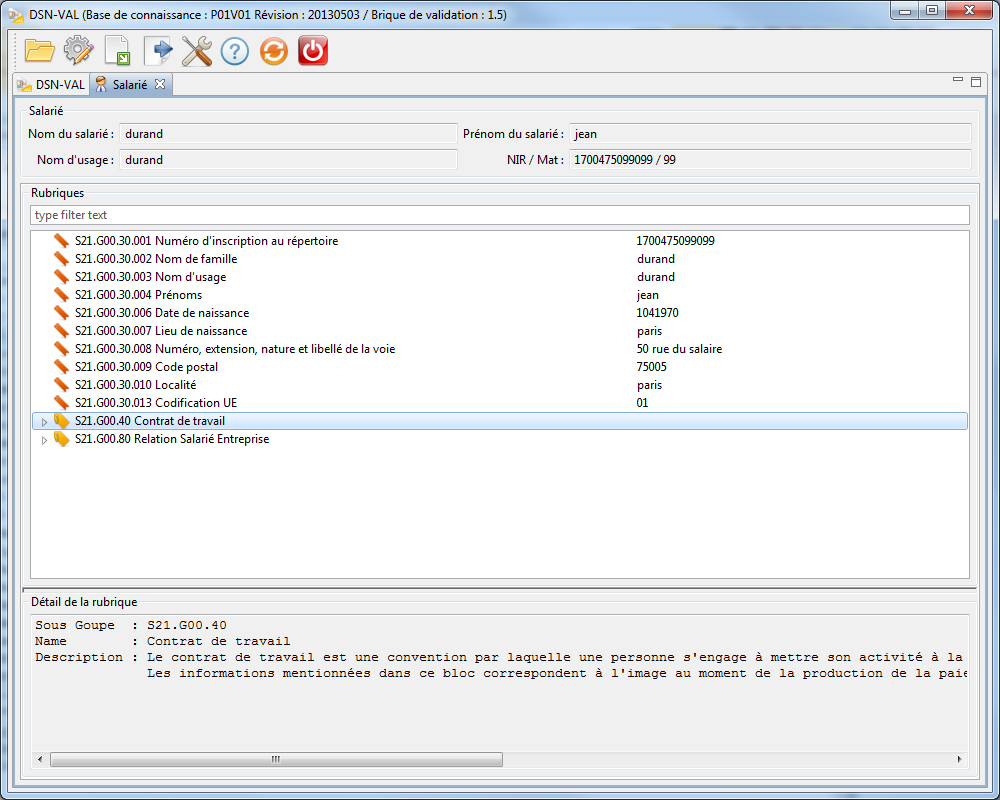
Les vues peuvent être disposées selon l’humeur de l’utilisateur, par exemple, soit les mettre côte à côte à l’intérieur de la fenêtre principale, par exemple, une à gauche,une à droite,
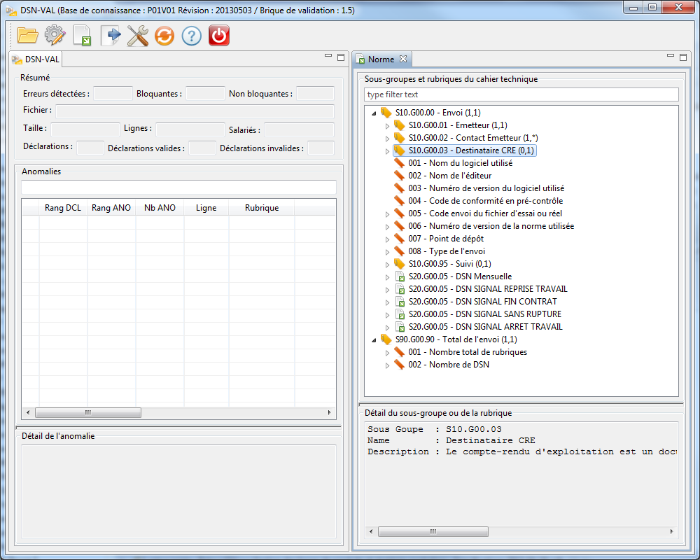
ou bien une en haut, une en bas,
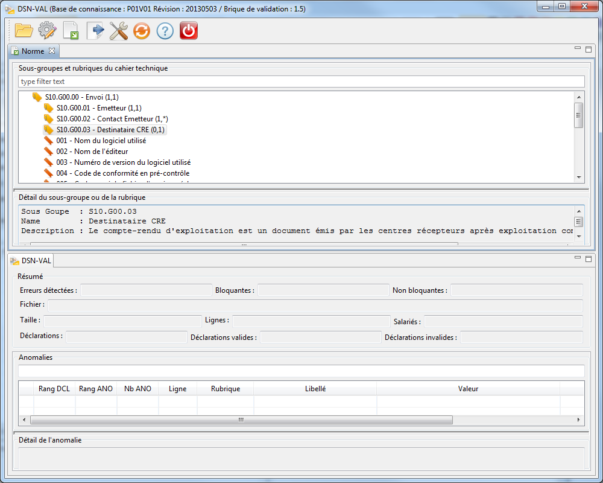
soit il y a la possibilité de «sortir» une vue de la fenêtre principale.
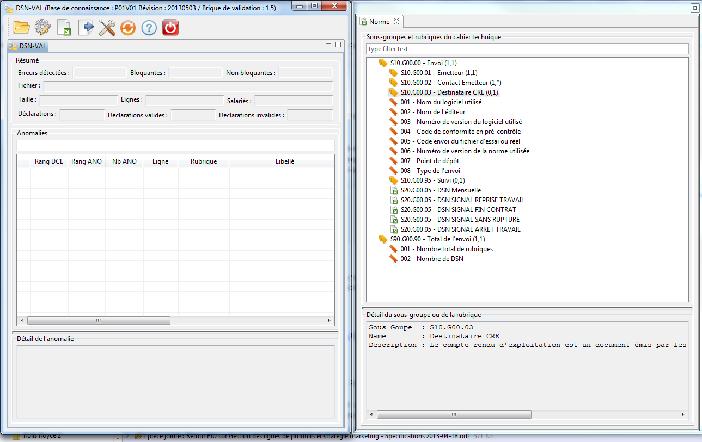
Pour faire ceci, il suffit de sélectionner une vue et la glisser/déposer à l’endroit voulu, une forme rectangulaire de pré-affichage se dessine aux endroits dans lesquels la vue peut se déplacer. Par exemple, dans la figure ci-dessous, voici le pré-affichage lorsque l’on a glissé la vue norme sur la partie droite.
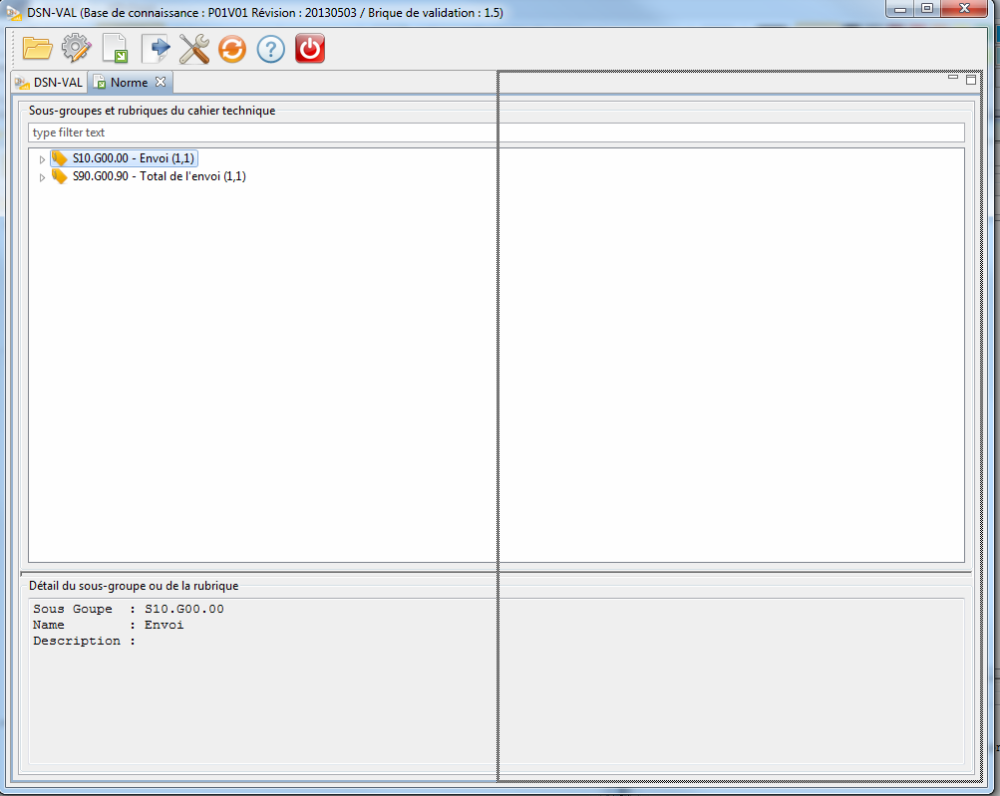
Bien sûr, il en est de même pour remettre les vues à leur positions initiales.
Il existe aussi la possibilité de minimiser et maximiser les vues soit à l’aide des actions sur le clic droit du menu contextuel soit avec les
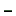 et
 en haut à gauche de la vue.
en haut à gauche de la vue.
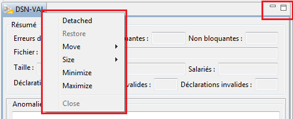
La fenêtre principale se décompose en trois parties :

Voici la liste des actions disponibles à partir de la barre d’outils :
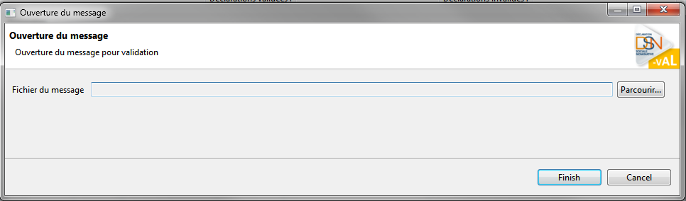
L’outil ne fonctionne qu’avec un zip contenant un seul fichier.
Une fois la ressource sélectionnée, le contrôle est lancé et le résultat est affiché dans la vue principale.
Une barre de progression s’affiche durant toute la durée du contrôle.
La vue principale permet de visualiser le résultat du contrôle et ainsi de naviguer dans les anomalies et de visualiser les informations synthétiques sur le bilan de validation.
Elle se décompose en trois parties :
L’entête résume les informations du contrôle. On retrouve donc :
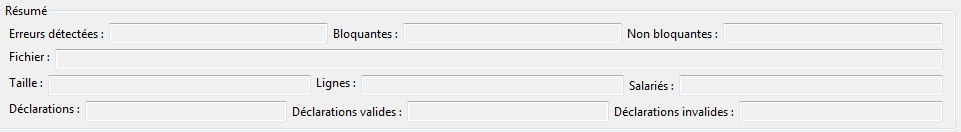
Elle contient la liste des anomalies du contrôle, dans les colonnes on retrouve pour chaque anomalie :
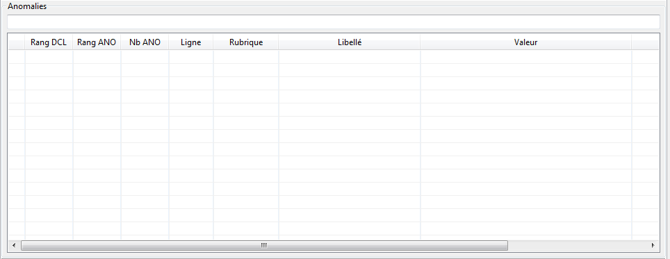
Toutes les colonnes sont retaillables et triables par ordre croissant et décroissant par rapport à leur contenu.
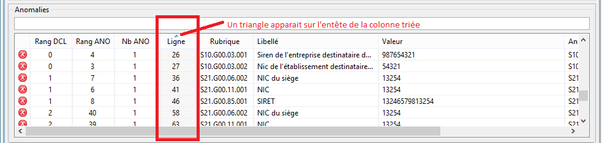
Cette table contient aussi un champ de recherche qui permet de filtrer sur les éléments recherchés voulus. Il est à noter que, sur ce champ de recherche, les caractères joker comme «*» ne fonctionnent pas.
Voici ce que cela peut donner, par exemple, en filtrant sur "S21.G00.06"
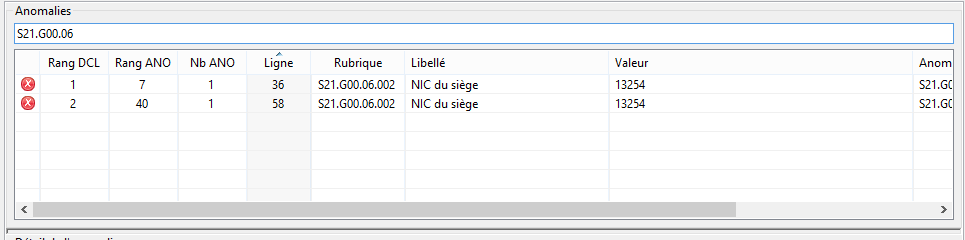
La table et la section détail sont retaillables en hauteur, il suffit de glisser/déposer sur la «ligne» entre les deux parties (encadrée en rouge dans la figure ci-dessous).
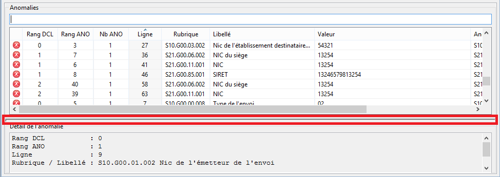
Sur les éléments de la colonne «Rubrique», il est possible de faire afficher une info-bulle récapitulant les informations de la rubrique en laissant la souris dessus quelques instants.
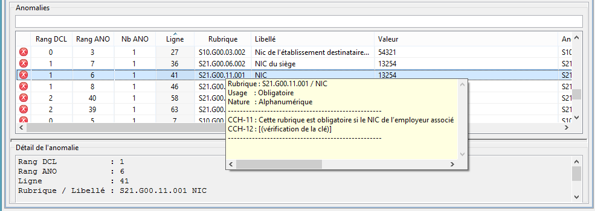
Il est à noter que des infos-bulles sont disponibles sur chaque cellule tronquée pour permettre d’avoir le contenu entier de la cellule.
Cette section récapitule la description et les valeurs de l’anomalie sélectionnée dans la table.
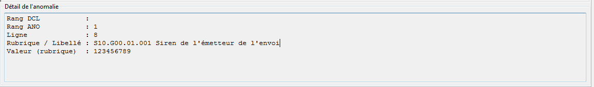
Le contenu de cette section peut être copié/collé, soit avec le menu contextuel du clic droit soit avec les raccourcis clavier habituels.
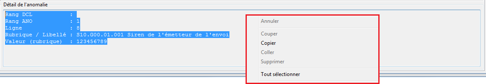
La table et la section détail sont retaillables en hauteur, il suffit de glisser/déposer sur la «ligne» entre les deux parties (encadrée en rouge dans la figure ci-dessous).
Depuis une anomalie de la table, le menu contextuel du clic droit permet deux actions :
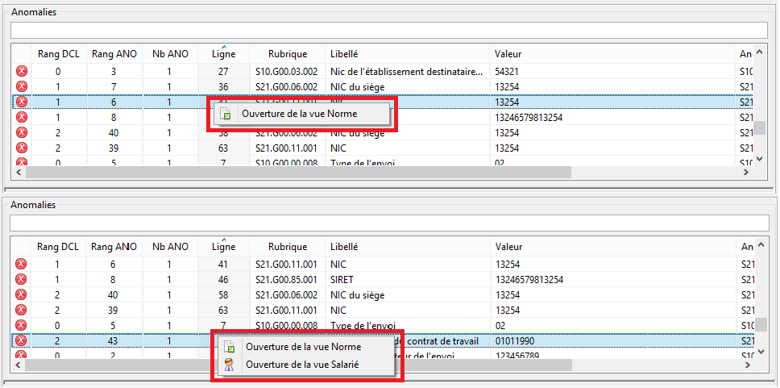
La vue norme permet de naviguer dans l’ensemble des rubriques de la norme : elle est représentée sous forme arborescente.
Elle se décompose en deux parties :
Cette partie représente l’arborescence des groupes et rubriques de la norme.
Elle contient aussi un champ de recherche qui permet de filtrer sur les éléments recherchés voulus. Il est à noter que, sur ce champ de recherche, les caractères joker comme «*» fonctionnent.
Voici ce que cela peut donner, par exemple, en filtrant sur "siège"
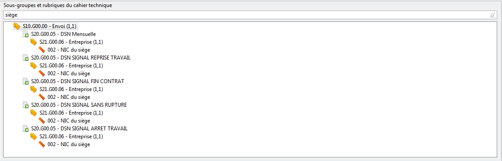
Le champ de recherche bénéficie d’une «gomme» pour effacer tout le contenu de la recherche.
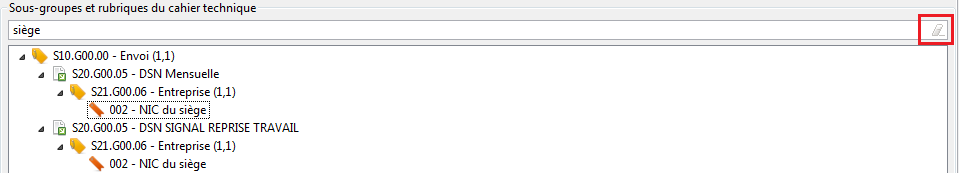
L’arborescence et la section détail sont retaillables en hauteur, il suffit de glisser/déposer sur la «ligne» entre les deux parties (encadrée en rouge dans la figure ci-dessous).
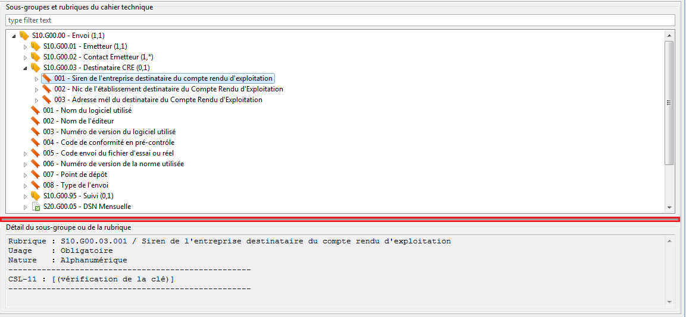
Cette section récapitule la description et les valeurs des rubriques ou groupes sélectionnés dans la table.
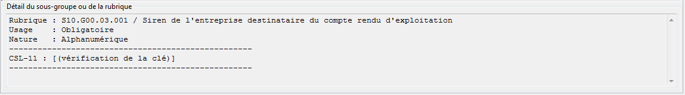
Le contenu de cette section peut être copié/collé, soit avec le menu contextuel du clic droit soit avec les raccourcis clavier habituels.
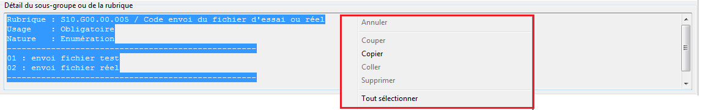
L’arborescence et la section détail sont retaillables en hauteur, il suffit de glisser/déposer sur la «ligne» entre les deux parties (encadrée en rouge dans la figure ci-dessous).
La vue individu est personnalisée en fonction de la norme utilisée. Elle permet de visualiser la partie du message contrôlé relative à un élément de la norme qui représente un individu. Dans le cas de la DSN, c’est les salariés qui représente les individus.
Elle se décompose en trois parties :
L’entête affiche des informations concernant l’individu sélectionné jusqu'à un maximum de quatre information. Ces informations dépendent de la norme utilisée par l’application. Dans le cas de la DSN, les informations montrées seront les informations du salarié sélectionnées suivantes.
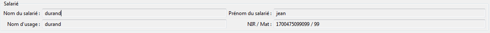
Cette partie représente l’arborescence des groupes et rubriques de la norme avec les valeurs de l’individu sélectionné.
Elle contient aussi un champ de recherche qui permet de filtrer sur les éléments recherchés voulus. Il est à noter que, sur ce champ de recherche, les caractères joker comme «*» fonctionnent.
Voici ce que cela peut donner, par exemple, en filtrant sur "*nom"
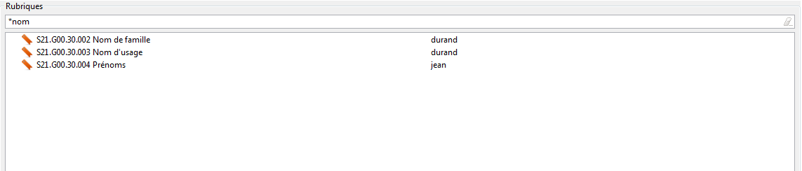
Le champ de recherche bénéficie d’une «gomme» pour effacer tout le contenu de la recherche.
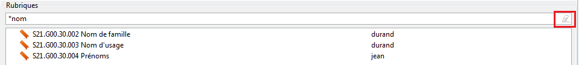
La table et la section détail sont retaillables en hauteur, il suffit de glisser/déposer sur la «ligne» entre les deux parties (encadrée en rouge dans la figure ci-dessous).
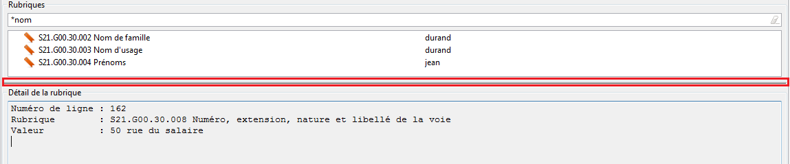
Cette section récapitule la description et les valeurs des rubriques ou groupes sélectionnés dans la table.
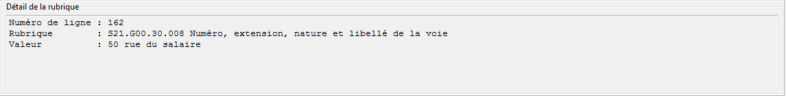
Le contenu de cette section peut être copié/collé, soit avec le menu contextuel du clic droit soit avec les raccourcis clavier habituels.

L’arborescence et la section détail sont retaillables en hauteur, il suffit de glisser/déposer sur la «ligne» entre les deux parties (encadrée en rouge dans la figure ci-dessous).
La vue maîtresse est la vue principale. Lorsqu’une anomalie est sélectionnée dans la table de la vue principale :
- si la vue norme est ouverte : la rubrique correspondant à l’anomalie est sélectionnée dans cette vue,
- si la vue individu est ouverte et que l’anomalie est liée à un individu : la rubrique correspondant à l’anomalie est sélectionnée dans cette vue.
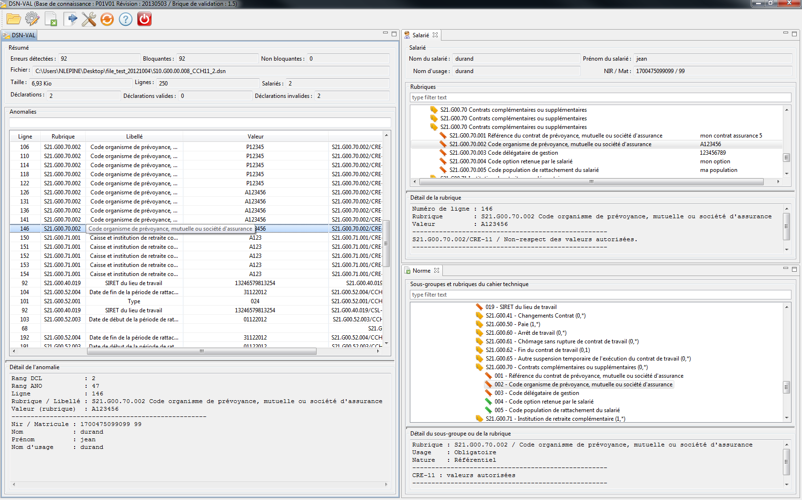
A partir de la vue individu, la sélection d’une rubrique associée à une anomalie provoque :
- la sélection de l’anomalie dans la table de la vue principale,
- si la vue norme est ouverte : la rubrique correspondant à l’anomalie est sélectionnée dans cette vue.
Le bilan de validation peut être enregistré sous n’importe quel format que la norme utilisée propose. Dans le cas de la DSN, les formats proposés sont html et xml. Lorsque l’on clique sur le bouton de la barre d’outils, une nouvelle fenêtre apparaît et permet de choisir :
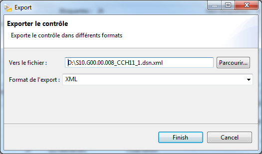
Par défaut, l’enregistrement se fait à côté du message d’entrée. Le nom de l’export est le même que le message d’entrée et le format par défaut est le xml.
Pour changer le répertoire d’enregistrement, il suffit de cliquer sur le bouton «Parcourir» et la fenêtre de sélection de fichier apparaît.
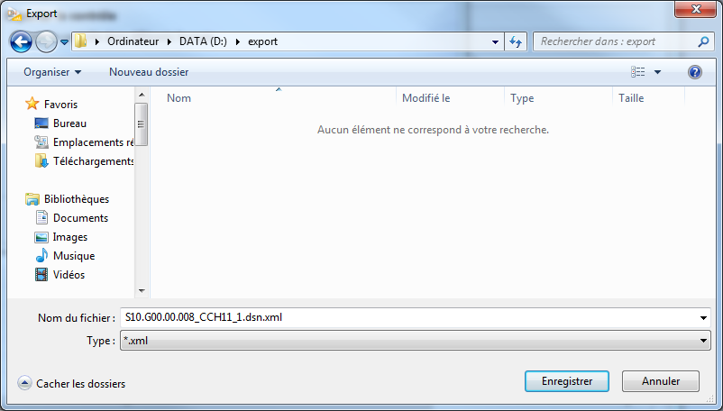
Lors du changement de format avec la boite de choix, l’extension du fichier change automatiquement. Par exemple, si par défaut le fichier est «d:/monFichier.dsn.xml», si l’on change le format d’enregistrement en «html», le nom du fichier se transforme en "d:/monFichier.dsn.html"
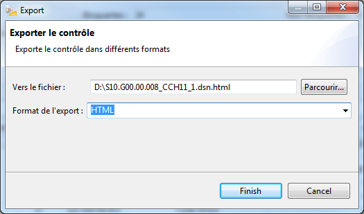
Voici un exemple de génération html que la DSN propose. Il possède un entête récapitulant les informations générales du contrôle puis
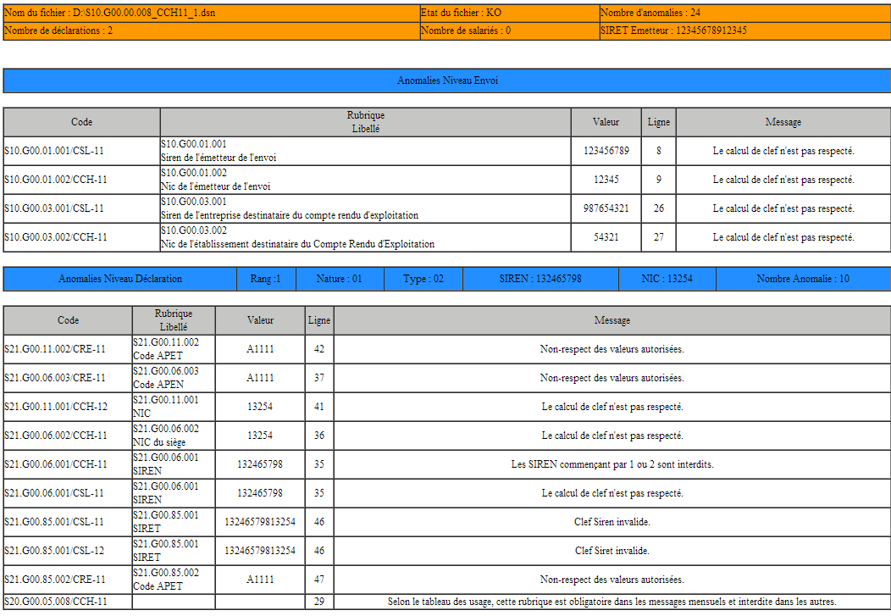
Et un exemple de génération xml, ce format reflète la structure du bilan de contrôle.
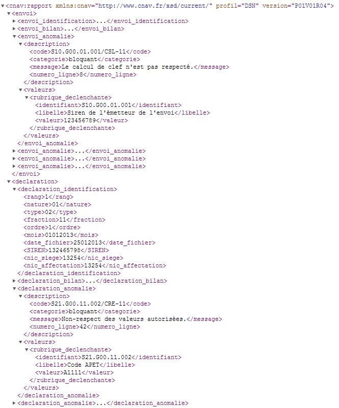
Les préférences sont accessibles depuis la barre d’outils et permettent de modifier le nombre maximal d’anomalies que le bilan peut prendre en compte, l’activation de la mutualisation des anomalies, l’acivation de la mise à jour de la norme au démarrage et l’accès au réglage d’accès au réseau au travers un proxy.
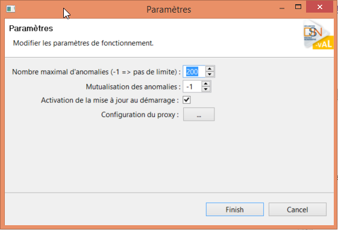
Par défaut, le nombre maximal d’anomalies est à 200. Il est modifiable soit textuellement, soit à l’aide des flèches «haut» et «bas».
Si ce paramètre est valorisé à -1 alors aucune limite ne sera appliquée sur le nombre d’anomalies réstituées lors de la validation.
Par défaut, la mutualisation est désactivée (valeur à -1). La configuration de ce paramètre avec une valeur différente de -1 provoque l’activation de la mutualisation sur les validations futures.
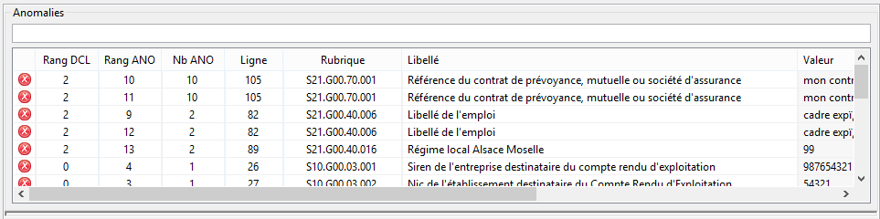
Par défaut, la mise à jour de la norme au démarrage est activée.
Pour la confguration du proxy, le bouton «...» donne accès à la fenêtre qui permet sa configuration :
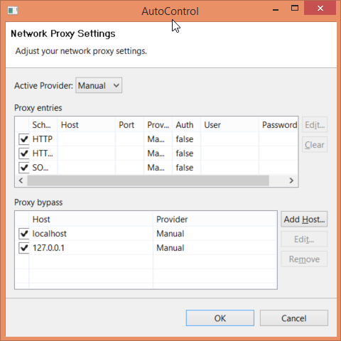
Le comportement de la validation avec autocontrol peut être paramétrée via le fichier «Autocontrol-Validateur.ini». Pour chaque paramètre que l’on veut spécifier, il faut ajouter sa ligne à la fin du fichier «ini». La liste des paramètres est la suivante :
| Nom du paramètre | Valeur par défaut | Valeurs autorisées | Description |
|---|---|---|---|
| -Dfr.cnav.norme.report.mutualisation.threshold | Pas de mutualisation | entier n > 0 | Propriété permettant de fixer le seuil à partir duquel les anomalies sont factorisées par le validateur. Si la définition de la propriété est absente la factorisation est inactive. Si la définition de la propriété est présente et contient un entier positif n alors les anomalies identiques ne seront présentes qu’au nombre de n dans chaque déclaration. |
| -Dmaximal.number.errors | Illimité | entier n > 0 | Propriété fournissant le nombre d’anomalies au-delà duquel les anomalies sont factorisées en une seule anomalie. Une valeur de 0, une valeur négative ou l’absence de la propriété correspondent à l’absence de limite. |
| -DconvertedFiles.root.path | none | String | chemin vers la racine du répertoire où sont produits les fichiers xml après conversion |
| -Dfr.cnav.norme.val.originalValue | datenum | «date», "datenum" | Propriété indiquant si on doit utiliser l’attribut XML originalValue sur les rubriques générées lors de la conversion. |
| -Dstop.on.syntactic.error | false | «true», "false" | Si la propriété est renseignée à la valeur « true » alors la validation est interrompue après la validation syntaxique en cas d’anomalies syntaxiques. |
| -Dstop.on.conversion.error | false | «true», "false" | Si la propriété est renseignée à la valeur « true » alors la validation est interrompue après la conversion en cas d’anomalies lors de la conversion. |
| -Dfr.cnav.norme.val.anomaliesInhibiting | true | «true», "false" | Lorsque cette propriété est à « true », les anomalies sémantiques secondaires générées à cause d’une autre anomalie primaire sont filtrées du rapport de validation |
La vérification des mises à jour de la norme utilisée se fait grâce au bouton
 de la barre d’outils.
de la barre d’outils.
Si aucune mise à jour n’est disponible, une fenêtre informe que l’outil est à jour.
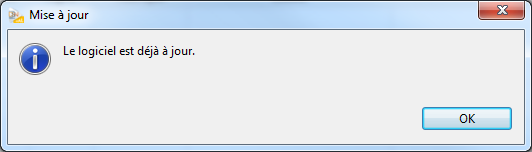
Si une mise à jour est disponible, une fenêtre apparaît laissant le choix à l’utilisateur d’installer ou non cette mise à jour.
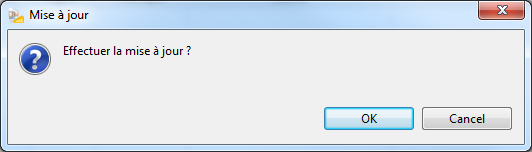
Si oui, la mise à jour est téléchargée. Une fois que cela est fini, un message informe l’utilisateur que l’outil va redémarrer pour prendre en compte les changements.
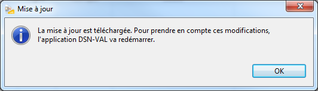
Si le site de mises à jour a besoin d'être modifié, cela est possible en modifiant le fichier «Autocontrol-Validateur.ini» et en remplaçant le paramètre «fr.cnav.autocontrole.updatesite.loc» par sa nouvelle valeur.
Par exemple, -Dfr.cnav.autocontrole.updatesite.loc=http://dsnval.cnav.update
La mise à jour de l’outil est réalisée au démarrage de l’application par défaut. Si la norme est à jour, l’application démarrera normalement sans aucune notification. Si la norme n’est pas à jour, une interface proposera à l’utilisateur de la mettre à jour. En cas de refus, l’utilisation de l’application est toujours possible. Cette action peut être désactivée par l’utilisateur dans la fenêtre préférence (voir chapitre «La modification des préférences»).